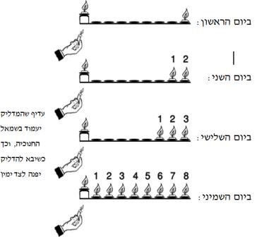

תקנו חכמים להדליק נרות בשמונת ימי החנוכה, שהם הימים שבהם חגגו ישראל והודו לה' שעזר להם לנצח את היוונים, לשחרר את ירושלים ולטהר את בית המקדש, ובימים אלו דלק השמן שבמנורת המקדש בדרך נס.
ואף שמצוות הדלקת נרות בחנוכה היא מצווה מדברי חכמים, מברכים עליה: "ברוך אתה ה' אלוהינו מלך העולם אשר קדשנו במצוותיו וצוונו להדליק נר של חנוכה". ולכאורה יש לשאול, הרי לא נצטווינו עליה בתורה שבכתב, ואם כן היאך אנו אומרים 'וצוונו'? אלא שהתורה נתנה סמכות לחכמים לתקן מצוות לפי דרכה של התורה, שנאמר (דברים יז, יא): "עַל פִּי הַתּוֹרָה אֲשֶׁר יוֹרוּךָ וְעַל הַמִּשְׁפָּט אֲשֶׁר יֹאמְרוּ לְךָ תַּעֲשֶׂה, לֹא תָסוּר מִן הַדָּבָר אֲשֶׁר יַגִּידוּ לְךָ יָמִין וּשְׂמֹאל". ועוד נאמר (דברים לב, ז): "זְכֹר יְמוֹת עוֹלָם, בִּינוּ שְׁנוֹת דּוֹר וָדוֹר, שְׁאַל אָבִיךָ וְיַגֵּדְךָ, זְקֵנֶיךָ וְיֹאמְרוּ לָךְ" (שבת כג, א). וכדי לזכור ולפרסם את הנס שעשה ה' עמנו בימי הבית השני תקנו חכמים להדליק נרות בשמונת ימי החנוכה.
נשים חייבות במצווה כגברים. ואף שזו מצוות עשה שהזמן גרמה, ובדרך כלל נשים פטורות ממצוות עשה שהזמן גרמן, מכל מקום כיוון שגם הנשים היו שותפות בנס, אף הן חייבות במצווה (שבת כג, א, אלא שנוהגים שאשה נשואה יוצאת בהדלקת בעלה עי' להלן הערה 2, ולעיל יא, יא, 14).
כל דיני המקום והזמן שקבעו חכמים להדלקת נר חנוכה נועדו כדי לפרסם את הנס. לפיכך תקנו להדליק את הנרות ליד הפתח או החלון הפונה לרשות הרבים, כדי שהעוברים ברחוב יראו את הנרות (כמבואר להלן יג, א-ג). ותקנו להדליק את הנרות משתשקע החמה, שאז הוא הזמן שהנרות יֵראו למירב האנשים, כי מצד אחד כבר נעשה חשוך ואור הנר ניכר היטב, ומנגד הרחובות עדיין מלאים באנשים שחוזרים מעבודתם (ויבואר להלן יג, ד). אולם אין הפרסום לרבים מעכב את המצווה, וגם יהודי שגר לבדו במקום שומם צריך להדליק נרות חנוכה, כדי לזכור בעצמו את הנס.
וגדולה מצווה זו מאוד, ואפילו עני שאין לו אפשרות לקנות נרות, צריך לחזר על הפתחים או למכור את כסותו כדי לקנות נרות חנוכה. ואף שלקיום מצוות אחרות אין חובה על האדם לחזר על הפתחים או למכור את כסותו, כאן שיש במצווה פרסום הנס, החיוב גדול יותר. אלא שאין העני צריך להדר במצווה, ודי לו להדליק נר אחד בכל יום (שו"ע תרעא, א; מ"ב ג; ערוה"ש ג. ועי' רמ"א תרנו, א; באו"ה 'אפילו').
חיבה מיוחדת נודעה למצוות הדלקת נרות חנוכה. בדרך כלל יש שתי מדרגות במצוות: חובת המצווה וקיומה למהדרין. ואילו בהדלקת נרות חנוכה יש שלוש מדרגות: חובת המצווה, למהדרין, ומהדרין מן המהדרין. ולא עוד, אלא שנהגו כל ישראל לקיים את מצוות נרות חנוכה כמנהג 'מהדרין מן המהדרין'.
החובה היא שבכל בית ידליקו בכל יום מימי החנוכה נר אחד עבור כל בני הבית, ובנר זה יזכרו ויפרסמו את נס החנוכה. והמהדרין מדליקים נר אחד לכל אחד מבני הבית הגדולים. לדוגמא, אם היו בני הבית ארבעה, מדליקים בכל הימים ארבעה נרות, ועל ידי כך מבטאים את ההשתתפות של כולם במצווה.
והמהדרין מן המהדרין מדליקים נרות לפי מספר הימים, ונחלקו בזה חכמים. בית שמאי אומרים: ביום הראשון מדליק שמונה נרות, מכאן ואילך פוחת והולך עד שביום האחרון מדליק נר אחד, כך שמספר הנרות כנגד הימים הנכנסים. ביום הראשון מדליקים שמונה נרות, כי יש עוד שמונה ימים לחנוכה. וביום האחרון מדליקים נר אחד, כי רק עוד יום אחד נותר לחנוכה. ובית הלל אומרים: ביום הראשון מדליק נר אחד, ומוסיף בכל יום נר אחד, עד שביום האחרון מדליק שמונה נרות, כך שמספר הנרות כנגד ימים היוצאים; שבכל יום מדליקים נרות כפי מספר הימים שהנס נמשך, ובזה מבטאים את התגדלותו של הנס, שכל יום נוסף שהדליקו את המנורה שבמקדש מאותו פך שמן קטן - הנס גדל יותר. ובאופן זה גם מעלים בקודש עד שביום השמיני מגיעים אל השיא ומדליקים שמונה נרות (שבת כא, ב). ונהגו כל ישראל כמנהג 'מהדרין מן המהדרין' לפי בית הלל (שו"ע או"ח תרעא, ב).
בפועל יוצא שמדליקים במשך שמונת ימי החנוכה ל"ו נרות. ועוד נוהגים להדליק בכל יום נר נוסף לשמש, כדי שאם יצטרכו לאור ישתמשו לאור השמש, שנרות החנוכה אסורים בהנאה. אבל מפרידים את השמש משאר הנרות, מפני שעיקר המגמה במנהג 'מהדרין מן המהדרין' שמספר הנרות יהיה ניכר, שהוא מבטא את התגדלות הנס (ויבואר להלן בהלכות י-יא).
נחלקו המנהגים כיצד צריך להיות בפועל מנהג 'מהדרין מן המהדרין'. למנהג הספרדים, עיקר ההידור שידליקו נרות לפי מספר הימים. וגם כאשר בני הבית מרובים, רק אחד מבני הבית מדליק את נרות החנוכה לפי מספר הימים היוצאים, ביום הראשון מדליק נר אחד, ביום השני שניים, ובשמיני שמונה. מפני שהמטרה להראות את מספר הימים שהנס נמשך, שבזה מתפרסם הנס יותר. ואם היו מדליקים נרות כנגד כל אחד מבני הבית בטפח הסמוך לפתח, לא היה ניכר מספר הימים, כי הנרות של כל בני הבית היו מצטרפים ומבלבלים את החשבון. וכיוון שרק אחד מדליק, מן הראוי שגדול הבית ידליק עבור כולם.
אם הילדים מבקשים להדליק נרות, אפשר לתת להם להדליק חנוכיה לעצמם, ובלבד שיקפידו להפריד בין החנוכיות, ולמנהג רבים מהספרדים לא יברכו, אבל מו"ר הרב מרדכי אליהו זצ"ל הורה שילדים עד גיל בר מצווה רשאים לברך. ולדעת הרב שלום משאש זצ"ל, גם מבוגרים מגיל בר מצווה שרוצים לזכות בברכה, רשאים לכוון שלא לצאת בהדלקת אביהם, ואזי יוכלו להדר להדליק נרות בברכה (ילקוט שמש או"ח קצב).
למנהג אשכנז, כדי להיות 'מהדרין מן המהדרין' צריך שכל אחד מבני הבית ידליק בברכה חנוכיה משלו, ביום הראשון כל אחד מדליק נר אחד, ובשמיני כל אחד מדליק שמונה. ואין חוששים שלא ידעו את מספר הנרות של אותו יום, מפני שמקפידים להפריד את החנוכיות זו מזו.
וגם קטנים שהגיעו לחינוך מדליקים נרות בברכה, וגיל חינוך הוא בערך מגיל שש, שאז הם מבינים את סיפור הנס והמצווה.
ונשים נשואות נהגו שלא להדליק נרות, מפני שהדלקת בעליהן נחשבת כהדלקה שלהן, ש'אשתו כגופו'. ובהרבה בתים גם בנות שהגיעו לחינוך ונערות נהגו שלא להדליק נרות. ומכל מקום אם ירצו להדליק, רשאיות להדליק בברכה. ונראה שטוב לעודד את הבנות שהגיעו לחינוך להדליק נרות לפחות עד הגיען לבת מצווה, כי ההדלקה מקשרת אותן לתורה ולמצוות. ואם ירצו להדליק גם אח"כ, תבוא עליהן ברכה. ואפילו אשה שבעלה מדליק נרות, אם תרצה למרות המנהג להדליק בעצמה - רשאית להדליק בברכה.
תקנו חכמים לברך שתי ברכות לפני הדלקת נרות חנוכה, כדי שנכוון את דעתנו לשני העניינים שבמצווה. הברכה הראשונה על עצם המצווה, וזה נוסחה: "ברוך אתה ה' אלוהינו מלך העולם אשר קדשנו במצוותיו וצוונו להדליק נר של חנוכה", ובנוסח ספרד מסיימים 'להדליק נר חנוכה'. הברכה השנייה היא הודאה על הנסים שעשה ה' לאבותינו בימי החנוכה, ותקנו לברך אותה בעת הדלקת הנרות, מפני שנרות החנוכה נועדו להזכיר את הנסים ומשמעותם. וזה נוסחה: "ברוך אתה ה' אלוהינו מלך העולם שעשה נסים לאבותינו בימים ההם בזמן הזה". וביום הראשון מוסיפים את ברכת 'שהחיינו', והיא הודאה לה' שהחיינו וקיימנו שנה נוספת, עד שזכינו להגיע פעם נוספת לימי החנוכה, ושוב אנחנו זוכים לקיים את מצוות הדלקת הנרות.
מיד לאחר סיום הברכות מתחילים להדליק את הנרות, ואין להפסיק בדיבור בין הברכות להדלקת הנרות. ולאחר סיום הדלקת הנר הראשון נוהגים להתחיל לומר את נוסח 'הנרות הללו' (שמקורו במסכת סופרים כ, ו), ותוך כדי אמירתו ממשיכים להדליק את שאר הנרות. ואף שעדיין לא הדליקו את שאר הנרות, אין בזה חשש הפסק, מפני שכבר למדנו שחובת המצווה מתקיימת בהדלקת הנר הראשון ושאר הנרות הם להידור מצווה. ואף שלכתחילה אין לדבר עד סיום הדלקת הנרות, נוסח 'הנרות הללו' הוא ביאור עניין המצווה, ולכן אדרבה יש מקום לאומרו תוך כדי המשך קיום המצווה. אמנם מי שמתקשה לומר 'הנרות הללו' בעוד שהוא מדליק נרות, יכול לומר 'הנרות הללו' אחר סיום הדלקת כל הנרות (עי' מ"ב תרעו, ח, משב"ז ה).
בנוסף לברכות ולאמירת 'הנרות הללו' יש מקדימים לומר לפני הברכות 'לשם יחוד', כדי להוסיף כוונה במצווה.
יש להדליק כל נר היטב, ולהמתין עד שהאש תאחז ברוב הפתילה באופן יציב, ולא כמו אלה שנחפזים ולפני שהנר נדלק כראוי עוברים לנר הבא (באו"ה תרעג, ב, 'הדלקה').
יש להשתדל שכל בני הבית יתכנסו למצוות הדלקת הנרות, כדי שישמעו את הברכות, יענו עליהן אמן ויראו את הדלקת הנרות. בנוסף לכך שיש בזה כבוד למצווה ופרסום לנס, הדבר נצרך לאלה שאינם מברכים על הנרות בעצמם, כמו אשה שיוצאת ידי חובתה בהדלקת בעלה, ובני בית שיוצאים ידי חובתם בהדלקת אבי הבית. מפני שעל ידי שמיעתם את הברכות הם משתתפים בהודאה לה' על הנסים. ואם לא ישמעו את הברכות, לדעת רמב"ם ורש"י, למרות שכבר יצאו ידי חובת הדלקת נרות בהדלקת אבי המשפחה, מכל מקום עליהם להביט בנרות החנוכה ולברך את ברכת 'שעשה נסים'. ולדעת הרשב"א והר"ן, הואיל וכבר יצאו ידי חובת המצווה בהדלקת אבי הבית, למרות שלא שמעו את הברכות, אינם צריכים לברך 'שעשה נסים' בעת שיראו את הנרות. וכיוון שיש בזה מחלוקת, מספק אין לברך (שו"ע תרעו, ג). אבל לכתחילה, כדי לקיים את המצווה לדעת כל הפוסקים, מי שאינו מדליק ומברך בעצמו, צריך לשמוע את הברכות ולענות עליהן אמן.
ולכן כל אדם שיוצא ידי חובת הדלקת נרות בהדלקת אחר, כגון אשה שיוצאת בהדלקת בעלה, ובני בית שיוצאים בהדלקת אבי המשפחה, צריכים להשתתף בהדלקת הנרות כדי שישמעו את הברכות ויענו אמן. וגם אם לא יוכלו להיות בביתם בעת ההדלקה, ישתדלו להשתתף בהדלקת נרות ושמיעת הברכות בבית אחר או בבית הכנסת, ובזה יצאו ידי חובתם לפי כל הדעות.
כל השמנים והפתילות כשרים לנר חנוכה, ואפילו שמנים ופתילות שפסולים להדלקת נר שבת כשרים לנר חנוכה. מפני שנר שבת נועד להאיר את הבית, ואם לא ידלוק יפה, ישנו חשש שמא יבוא האדם להטות את הנר כדי להיטיבו ויחלל שבת. לכן אסרו חכמים להדליק נר שבת בשמן או בפתילה שאינם דולקים יפה. אבל בנרות חנוכה הרי אין לנו רשות להשתמש, ולכן כל שמן ופתילה שמסוגלים לדלוק חצי שעה כשרים לנר חנוכה.
ככל שהנר מאיר יפה יותר, כך הוא מהודר יותר, כי מתפרסם בו הנס יותר. ולכן רבים נוהגים להדר ולהדליק בנר שעווה או פראפין שאורם חזק ויפה. ורבים מהאחרונים כתבו שעוד יותר מהודר להדליק בשמן זית, מפני שאורו צלול, ובנוסף לכך הוא מזכיר את נס פך השמן.
נרות חנוכה צריכים שיהיה בהם חומר בעירה כשיעור שיוכלו לדלוק במשך חצי שעה, מפני שתקנו חכמים להדליק מסוף שקיעת החמה ועד שתכלה רגל מהשוק, ומשך זמן זה כחצי שעה. וגם כאשר מדליקים בתוך הבית, צריך שהנר יוכל לדלוק חצי שעה. ומי שיש לו רק מעט שמן או נר קטן שיוכל לדלוק פחות מחצי שעה, ידליק אותו בלא ברכה.
לאחר שנתגלה החשמל התעוררה שאלה, האם אפשר לקיים את מצוות הדלקת נרות חנוכה בנורות חשמליות.
למעשה, דעת רוב הפוסקים שאין יוצאים ידי חובת המצווה בנורות חשמל, מפני שאין הן נחשבות כנר, שאין בהן פתילה ושמן. ועוד, שהואיל ואורם חזק מאוד יש לחוש שהן נחשבות כאבוקה ולא כנר. ומרן הרב קוק זצ"ל כתב, כיוון שהחשמל לא נתגלה בעת שתקנו חכמים את המצווה, אינו נחשב כאחד מסוגי הנרות שכלולים בתקנת חכמים שאפשר לקיים בהם את המצווה (מצוות ראיה או"ח תרעג).
ואמנם לעניין נר שבת, דעת רוב הפוסקים שבשעת הצורך אפשר לקיים את המצווה בברכה בהדלקת נורה חשמלית, מפני שעיקר תפקידו של נר השבת להאיר. אולם נר חנוכה נועד להזכיר את הנס, לפיכך עליו להיות דומה לנרות המקדש, וכיוון שנורה חשמלית אינה דומה לנר, אין יוצאים בה ידי חובה.
אבל בדיעבד, כשאין לאדם נר כשר, ידליק נורות חשמליות בלא ברכה, שעל ידי כך יזכיר את הנס, ולדעת מקצת הפוסקים אף יקיים בכך את המצווה.
יש נוהגים להעמיד במקומות ציבוריים חנוכיות גדולות עם נורות חשמל שאורן נראה למרחק רב, ואף שאין מקיימים בהם את המצווה שתקנו חכמים, מכל מקום יש בזה מעלה, שעל ידי כך מזכירים לרבים את נס החנוכה.
הדלקת הנרות היא המצווה ולא היותם דלוקים, וכן תקנו חכמים בנוסח הברכה: "אשר קדשנו במצוותיו וצוונו להדליק נר של חנוכה". ולכן אם הדליק נרות שיכולים לדלוק חצי שעה, ומישהו הפילם בטעות וכבו לפני שהספיקו לדלוק חצי שעה, אינו חייב לחזור להדליקם, הואיל וכבר קיים את המצווה בעת ההדלקה. ואפילו אם הדליק נרות מסוג גרוע, שיש חשש מסוים שמא יכבו, כיוון שבדרך כלל הם דולקים חצי שעה, יצא ידי חובה. אבל פסקו האחרונים, שבכל אופן אם הנרות כבו לפני שהספיקו לדלוק חצי שעה, ראוי להחמיר ולהדליקם, כדי שידלקו כשיעור חצי שעה שתקנו חכמים (שו"ע תרעג, ב; מ"ב כז).
ואם הדליקם במקום שלא יוכלו לדלוק חצי שעה, כגון במקום שהרוח נושבת, ואכן הרוח כיבתה את הנרות לפני שהספיקו לדלוק חצי שעה, לא יצא ידי חובה, מפני שכבר כשהדליקם לא היו ראויים לדלוק חצי שעה. לדעת רוב הפוסקים עליו לחזור להדליקם בברכה, אולם למעשה יחזור וידליקם בלא ברכה, מפני שיש בזה ספק, וכלל הוא: ספק ברכות להקל.
כאמור, הדלקת הנרות היא המצווה ולא הנחתם במקומם, לפיכך, אם היה נר דולק מבעוד יום במקום הכשר לנר חנוכה, כיוון שהנר לא הודלק לשם מצווה, אין יוצאים בו ידי חובה. ואף אם יגביהנו בעודו דולק ויניחנו שוב במקומו לשם מצווה - לא יצא. אלא עליו לכבותו ולהדליקו לשם מצווה, ואין צורך להגביה את החנוכיה ולהניחה לשם מצווה (שבת כג, א; שו"ע תרעה, א).
צריך להדליק את הנרות במקום הנחתם, ואפילו אם בעל הבית חולה ואינו יכול לקום ממיטתו, אין מביאים לו את הנרות כדי שידליקם ליד מיטתו ויעבירום אח"כ למקומם, אלא בעל הבית יברך ואדם אחר ידליק עבורו את הנרות במקום הראוי להם (בא"ח וישב ו). ואם הניח את הנרות על אדן החלון אבל שכח להצמידם לחלון לפני ההדלקה, רשאי לקרבם מעט אחר ההדלקה, כדי שהעוברים ושבים ברחוב יראום טוב יותר.
אסור להשתמש לאור נרות חנוכה, בין תשמיש של חול, כגון לספור מעות לאורם, ובין תשמיש של קודש, כגון ללמוד בספר לאורם. מפני שהנרות מקודשים למצוות נר חנוכה, וכשם שאסור ליהנות מהנרות שבמנורת המקדש כך אסור ליהנות מנרות חנוכה שנתקנו כזכר לנס שהיה במנורת המקדש. ועוד, שהנרות נועדו לפרסום הנס, ואם ישתמש לאורם, יֵראה כמי שהדליקם כדי להאיר ולא לשם מצוות פרסום הנס (שו"ע תרעג, א).
אסור להשתמש במה שנותר מן השמן או הנרות שהודלקו לשם נרות חנוכה, מפני שבעת הדלקתם הוקצו למצווה. אם יוכל להשתמש בהם לצורך נרות חנוכה בימים הבאים מה טוב, ואם אינם ראויים לשימוש או שנותרו לאחר הלילה השמיני, יעשה להם מדורה וישרפם (שו"ע תרעז, ד; מ"ב יח). או שישפוך את השמן הנותר בכיור, ואת הפתילות שנותרו יניח בפח. אבל הנרות שנותרו בחבילה, והשמן שנותר בבקבוק, מותרים לכל שימוש.
התחיל להדליק את הנרות וכבה השמש, לא ידליק את השמש מנר מצווה, מפני שהשמש הוא נר של חול, ואין להדליק נר של חול מנר של מצווה. ואם אזלו לו הגפרורים, ואם לא ידליק את השמש מנר חנוכה לא יוכל להמשיך להדליק את שאר הנרות, ידליק את השמש מנר חנוכה.
מעיקר הדין צריך להדליק את הנרות למשך חצי שעה בלבד, ואם המשיכו לדלוק אחר חצי שעה, מותר ליהנות מהם. אולם נהגו להחמיר שלא ליהנות מהנרות גם אחר חצי שעה, מפני שגם אז עדיין יש פרסום נס, ואם יהנה מהם, יֵראה כמי שמבזה את המצווה. ועוד, שהואיל והתקין את הנרות לצורך מצווה, ולא חשב ליהנות מהם אחר חצי שעה, יש אומרים שכל הנר נתקדש למצווה, ואסור להשתמש בו לצורך חול.
ראוי להדר ולהדליק את הנרות בחנוכיה נאה, כל אדם לפי יכולתו. ויש שנהגו להדר לקנות חנוכיה מכסף או זהב. ומי שאין לו חנוכיה יכול להדביק את נרות השעווה על משטח ישר ולהדליקם, וכן יכול ליקח כוסיות ולהניח בהם שמן ופתילה ולהדליקם. ובכלים בזויים, כדוגמת כלי חרס מפויחים, אין להדליק את הנרות (שו"ע תרעג, ג; מ"ב כח; כה"ח ס-סב).
יש להקפיד שיהיה רווח בין הנרות, כדי שכל נר יֵראה לבדו ויתפרסם הנס. בנוסף לכך, יש לחוש שאם יהיו קרובים מדאי, שלהבתם של שני נרות תתאחד ואזי לא יצא בהם ידי חובה, כי יֵראו כמדורה ולא כנר. בנרות שעווה מצטרף חשש נוסף, שאם יהיו קרובים מדאי ימיסו זה את זה ולא יוכלו לדלוק כשיעור חצי שעה (שו"ע תרעא, ד, ונושאי כליו).
מצד הדין, גם אם לא הניח את הנרות בגובה שווה ובשורה שווה, כל זמן שהנרות מופרדים זה מזה, והעומד לידם יכול לסופרם שהם כנגד ימי החנוכה, מקיימים בהם את המצווה. וכן אם הניח פמוטות בעיגול, כיוון שכל נר עומד לעצמו, קיים בהם את המצווה. אבל לכתחילה יש להעמיד את הנרות בשורה שווה, כדי שכל הרואים יוכלו לראות את הנרות ביחד, ולהבחין במספרם המכוון כנגד הנס (רמ"א תרעא, ד, באו"ה 'ומותר').
כדי שלא יבוא אדם לידי איסור של שימוש לאור הנרות, נהגו להדליק נר נוסף לשמש, שאם יצטרכו באותו מקום לאור, ישתמשו לאור השמש. ובחדר שיש בו תאורת חשמל, על פי הדין אין צורך בשמש, ואע"פ כן נהגו רבים להדליק שמש, כדי להבליט את ההבדל שבין נרות המצווה שאסור לנו להשתמש לאורם לנר השמש שמותר לנו להשתמש לאורו.
אולם כדי שלא נטעה במספר הנרות, מניחים את השמש בגובה שונה או במרחק מן הנרות, כדי שיהיה ניכר לכל הרואים, מי הם הנרות ומי הוא השמש. ונהגו להניחו גבוה יותר, כדי שאם יצטרכו שם לאור יהיה ניכר שמשתמשים לאורו ולא לאור שאר הנרות (שו"ע ורמ"א תרעג, א, מ"ב כ).
הבא לסדר את החנוכיה עומד בפני התלבטות: היכן עדיף שיקבע את הנר ביום הראשון, והיכן יקבע את הנר השני ביום השני, ומאיזה נר עדיף להתחיל להדליק. ואף שבכל דרך שינהג יקיים את המצווה כ'מהדרין מן המהדרין', המנהג המובחר ביותר הוא לקבוע את הנר ביום הראשון בצד ימין של החנוכיה (ימינו של המדליק שעומד מול החנוכיה), מפני שיש להעדיף תמיד את צד ימין על שמאל. וביום השני יוסיף עוד נר לשמאלו, ואחר שיברך ידליק תחילה את הנר הנוסף ואחריו את הנר שלימינו. ושני טעמים לכך: א) מפני שעדיף להתחיל בנר הנוסף שמבטא את התגדלות הנס. ב) אחר שידליק את הנר השמאלי יצא שיפנה לצד ימין כדי להדליק את הנר שלימינו, וכפי שאמרו חכמים (יומא טו, ב) שבכל פניות שאדם פונה, עדיף לפנות דרך צד ימין. וכך בכל יום יוסיף עוד נר בצד שמאל, וידליק אותו ראשון, ואח"כ יפנה לצד ימינו וידליק את שאר הנרות. וראוי לעמוד בעת הברכות לצד שמאל החנוכיה, כדי שהנר הקרוב אליו יהיה הנר שהוא עומד להדליק ראשון, וכך לא יחשב כמי שמדלג על שאר הנרות כדי להדליקו (שו"ע תרעו, ה, מ"ב יא).
אסור להתחיל לאכול חצי שעה לפני זמן הדלקת הנרות שהוא בצאת הכוכבים (כמבואר בהמשך יג, ד). ואפילו ארוחה קלה אסור להתחיל, שמא יימשך בסעודתו וישכח להדליק נרות. וכן אסור לשתות משקה משכר. אבל מותר לאכול פירות וירקות בלא הגבלה, וכן מותר לאכול לחם או מזונות עד שיעור כביצה (כ-50 סמ"ק).
כמו כן, אסור להתחיל בעבודה שעלולה להימשך זמן רב בחצי שעה שלפני זמן הדלקת נרות. וכן לא ילך לישון באותו הזמן. ואם יבקש מחבירו שיזכיר לו להדליק נרות בזמן, רשאי להתחיל באותה חצי שעה לאכול, לעבוד או לישון. ובכל אופן, גם אם התחיל בכל הדברים הללו בהיתר, היינו יותר מחצי שעה לפני זמן הדלקת הנרות, כיוון שיגיע זמן צאת הכוכבים עליו להפסיק ולהדליק נרות, כדי שלא יפסיד את זמן ההדלקה שתקנו חכמים (מ"ב תרעב, י, שעה"צ שם, פניני הלכה תפילה כה, ט).
מי שהוא באמצע עבודתו ואינו יכול לשוב לביתו להדלקת נרות בצאת הכוכבים, רשאי להמשיך בעבודתו עד שיסיים, אבל יזהר שלא לאכול עד שיקיים את המצווה. ואם זו עבודה שהעיסוק בה יכול להימשך זמן רב עד שיש חשש שלבסוף ישכח להדליק נרות, יוכל להמשיך בעבודתו רק אם יבקש מחבירו שיזכיר לו בסיום עבודתו להדליק נרות (ועיין להלן יג, ו; יג, ט).
כשיגיע זמן הדלקת הנרות צריך להזדרז לקיים את המצווה, ואפילו ללמוד תורה אסור באותה שעה, כדי שלא לעכב את קיום המצווה. אבל אם מתקיים באותו זמן שיעור קבוע, שאם יבטלוהו יתקשו לקיימו במועד אחר, עדיף לקיים את השיעור, ובסוף השיעור יזכירו לכולם להדליק נרות (עיין להלן יג, ו, 13).
נהגו להדליק נרות חנוכה בבית הכנסת, ומברכים על הדלקתם את כל הברכות שמברכים בבית. ואף שלפי תקנת חכמים צריך להדליק נרות בבית בלבד, נהגו להדליק גם בבית הכנסת כדי לפרסם את הנס יותר. ונוהגים להניח את הנרות בכותל הדרומי של בית הכנסת, בדומה למקומה של המנורה במקדש. ואין אדם יוצא ידי חובתו בהדלקה שמדליקים בבית הכנסת. ואפילו מי שהדליק את הנרות בבית הכנסת בברכה לא יצא ידי חובתו, ועליו לחזור לאחר מכן לביתו, ולהדליק את נרות החנוכה בברכה (שו"ע תרעא, ז).
נוהגים להדליק את הנרות בין מנחה לערבית, מפני שאז מירב האנשים נמצאים בבית הכנסת ויתפרסם הנס יותר, אבל אחר תפילת ערבית האנשים כבר מזדרזים לחזור לבתיהם להדלקת נרות.
במקום שמאחרים להתפלל ערבית, לאחר זמן צאת הכוכבים, ידליקו את הנרות לפני תפילת ערבית.
בערב שבת, נוהגים ברוב המקומות להתפלל מנחה סמוך לשקיעה, וממילא אין אפשרות להדליק נרות לאחר מנחה, כי אז צריכים לקבל את השבת, אלא ידליקו את נרות החנוכה לפני מנחה. ובמקום שמקדימים להתפלל מנחה זמן רב לפני השקיעה, ידליקו נרות אחר תפילת מנחה, ויקפידו לסיים את ההדלקה לפחות חמש דקות לפני השקיעה, כדי שיוכלו לקבל את השבת לפני השקיעה, ויקיימו את המצווה להוסיף מהחול על הקודש (מ"ב תרעא, מז). במוצאי שבת, מדליקים נרות לאחר תפילת ערבית, מפני שלפני התפילה עדיין לא יצאו מהשבת.
טעם הדלקת הנרות בבית הכנסת כדי לפרסם את הנס, לפיכך צריכים להיות נוכחים בעת ההדלקה בבית הכנסת עשרה בני אדם לפחות. ואם עוד לא התקבצו שם עשרה אנשים, ואי אפשר לדחות את ההדלקה, כגון בערב שבת, שיש חשש שאם יתעכבו לא יספיקו לסיים את תפילת המנחה בזמן. יש אומרים שהואיל ואח"כ יתקבצו שם עשרה אנשים שיראו את הנרות, אפשר להדליק את הנרות בברכה למרות שאת הברכות לא ישמעו עשרה (מ"א, מ"ב תרעא, מז, ובאו"ה שם). ויש אומרים שידליקו נרות בלי ברכה (מור וקציעה, כה"ח תרעא, עב).
רבים נוהגים להדר בפרסום הנס ולהדליק חנוכיה בכל מקום שמתאספים בו אנשים, כגון בחתונה, בר מצווה, בת מצווה, וכן כאשר מתאספים למסיבת חנוכה או לשמיעת הרצאה. השאלה האם מותר לברך על הדלקת הנרות באירועים אלו.
לדעת רבים מרבני דורנו אין לברך על הדלקת נרות במסיבות אלו, מפני שרק בבית הכנסת נהגו להדליק נרות בברכה, אבל אין בידינו כוח לחדש מנהגים במקומות אחרים, והמברך על ההדלקה במקומות אחרים מברך ברכה לבטלה. ויתכן שטעם המנהג להדליק דווקא בבית הכנסת - זכר למנורה שהדליקו במקדש, שבית הכנסת הוא מקדש מעט, וממילא אין להדליק במקומות אחרים בברכה.
אולם לדעת כמה פוסקים, מותר להדליק נרות בברכה בכל מקום של התאספות ציבורית, מפני שטעם המנהג להדליק בבית הכנסת הוא כדי לפרסם את הנס, ועל כן יש להדליק נרות בברכה בכל מקום שיש בו התאספות ציבורית. ויותר טוב שישתדלו להתפלל שם מנחה ומעריב, או אפילו רק מעריב, ואז אותו מקום יחשב במידה מסוימת כבית כנסת, וממילא יוכלו להדליק בו בברכה כמנהג.
למעשה, הרוצה לסמוך על הסוברים שאפשר להדליק בברכה רשאי. ואם יש באותה התאספות גם אנשים חילונים שאולי לא הדליקו נרות בביתם, ישנה חשיבות מרובה להדליק שם נרות בברכה, מפני שרק אם ידליקו נרות בברכה, יעמדו כולם לשמיעת הברכות ויתפרסם הנס לעיניהם וילמדו כיצד לקיים את המצווה. ואם אפשר, עדיף לכבד בהדלקה ובברכה יהודי שאינו רגיל במצוות, ועל ידי כך יהיה ניכר שהמצוות שייכות לכל ישראל, דתיים וחילוניים כאחד.